StudyFlow — Bộ sơ đồ báo cáoStudyFlow — Bộ sơ đồ báo cáo
Thiết kế tham khảo màu theo từng loại biểu đồ Visual Paradigm; số hình theo ba chương Markdown hiện hành. Mở SVG để phóng to, PNG để chèn Word; PDF chỉ tổng hợp sơ đồ, không thay thế báo cáo gốc.
Quy ước / đối chiếu PDF cũ · Tải PDF sơ đồHình 1.1. Phạm vi chức năng và các nhánh học tập của StudyFlow.
Chèn vào Chương 1 tại đoạn dẫn cùng số hình. Hình dưới thể hiện phạm vi studyflow. Khổ ngang vì hình dài.
 Hình 1.1. Phạm vi chức năng và các nhánh học tập của StudyFlow.
Hình 1.1. Phạm vi chức năng và các nhánh học tập của StudyFlow.Hình cho thấy Course Material PDF và Personal PDF đi theo hai nhánh quyền riêng. Student Tutor chỉ dùng PDF lớp đã công bố; Personal Document Assistant dùng một Agent cho hỏi đáp, tóm tắt và tạo Quiz. Java ghi nhận sự kiện học tập và chấm Quiz, còn sinh viên chủ động quản lý Kế hoạch & Lịch. Đây là sơ đồ phạm vi nghiệp vụ, không phải trình tự API hoặc minh chứng implementation đã hoàn thành.
SVGPNGNguồn / chú giải
Hình 2.1. Biểu đồ Use Case tổng quát toàn hệ thống StudyFlow.
Chèn vào Chương 2 tại đoạn dẫn cùng số hình. Hình dưới thể hiện hình 2.1 — use case tổng quát studyflow. Khổ ngang vì hình dài.
 Hình 2.1. Biểu đồ Use Case tổng quát toàn hệ thống StudyFlow.
Hình 2.1. Biểu đồ Use Case tổng quát toàn hệ thống StudyFlow.- Tác nhân Student tương tác với Course Offering, Course Material PDF/Page Note/Tutor, Personal Document Assistant, Quiz/Review, Dashboard và Kế hoạch & Lịch.
- Tác nhân Teacher tạo/quản lý Course Offering, enrollment, Course Material PDF/publication và AI Quiz Generator; không có chatbot hoặc Tutor.
- Tác nhân Admin quản lý người dùng, vai trò, Subject, Semester, giám sát Course Offering, feedback, audit và cấu hình hệ thống; Admin không mặc định được đọc dữ liệu học tập cá nhân của Student.
- Ba khung chức năng nằm trong một System Boundary duy nhất của StudyFlow. Hình 2.2–2.4 tiếp tục phân rã nghiệp vụ theo từng vai trò để tránh đưa chi tiết luồng xử lý vào biểu đồ tổng quát.
- Biểu đồ phân định ranh giới nghiệp vụ rõ ràng: Giảng viên và Quản trị viên không can thiệp vào kho tài liệu cá nhân, nội dung hỏi đáp riêng tư, kết quả làm Quiz và lịch học của từng sinh viên.
SVGPNGNguồn / chú giải
Hình 2.2. Biểu đồ Use Case chi tiết phân hệ Sinh viên (Student).
Chèn vào Chương 2 tại đoạn dẫn cùng số hình. Hình dưới thể hiện hình 2.2 — use case phân hệ student. Khổ ngang vì hình dài.
 Hình 2.2. Biểu đồ Use Case chi tiết phân hệ Sinh viên (Student).
Hình 2.2. Biểu đồ Use Case chi tiết phân hệ Sinh viên (Student).- Ký hiệu Student được lặp ở hai phía nhưng cùng biểu diễn một tác nhân; cách trình bày này rút ngắn association, giữ đường nối thẳng và không tạo thêm vai trò nghiệp vụ.
- Nhóm lớp học phần: khi được duyệt, Student xem Course Material PDF, lưu page_notes và hỏi Course Material AI Tutor.
- Nhóm tài liệu cá nhân: Student upload PDF, chọn nguồn rồi dùng cùng một Assistant để hỏi, tóm tắt hoặc tạo Quiz; citation theo trang và thiếu căn cứ trả NO_EVIDENCE.
- Nhóm Quiz AI: Quiz Student tạo trong Assistant phải review trước attempt; Java chấm điểm và tổng hợp câu sai theo page source.
- Nhóm ca sử dụng tiến độ và kế hoạch: Sinh viên thiết lập Daily Goal, quản lý các đầu việc Task trên giao diện lịch tuần và theo dõi thống kê chuỗi ngày học Streak trên Dashboard.
SVGPNGNguồn / chú giải
Hình 2.3. Biểu đồ Use Case chi tiết phân hệ Giảng viên (Teacher).
Chèn vào Chương 2 tại đoạn dẫn cùng số hình. Hình dưới thể hiện hình 2.3 — use case phân hệ teacher. Khổ dọc vì hình ngắn hoặc vừa.
 Hình 2.3. Biểu đồ Use Case chi tiết phân hệ Giảng viên (Teacher).
Hình 2.3. Biểu đồ Use Case chi tiết phân hệ Giảng viên (Teacher).- Giảng viên trực tiếp khởi tạo lớp học phần (Create Course Offering) dựa trên danh mục Môn học và Học kỳ do Nhà trường/Admin ban hành mà không cần chờ phê duyệt lớp.
- Quản lý thành viên lớp: Giảng viên xem danh sách yêu cầu tham gia, thực hiện phê duyệt (Approve Enrollment) để cấp quyền cho sinh viên hoặc từ chối (Reject Enrollment). Giảng viên có quyền tạo mới hoặc vô hiệu hóa mã mời (Manage Join Code).
- Quản lý học liệu và Quiz: Giảng viên upload/public/revoke Course Material PDF, sau đó có thể chọn PDF, số câu, độ khó, chủ đề và trang để tạo Quiz AI; Teacher review trước khi publish.
SVGPNGNguồn / chú giải
Hình 2.4. Biểu đồ Use Case chi tiết phân hệ Quản trị viên (Admin).
Chèn vào Chương 2 tại đoạn dẫn cùng số hình. Hình dưới thể hiện hình 2.4 — use case phân hệ admin. Khổ dọc vì hình ngắn hoặc vừa.
 Hình 2.4. Biểu đồ Use Case chi tiết phân hệ Quản trị viên (Admin).
Hình 2.4. Biểu đồ Use Case chi tiết phân hệ Quản trị viên (Admin).- Quản lý danh mục cốt lõi: Khởi tạo, cập nhật các Môn học (Subject) và Học kỳ (Semester), cấu hình thời gian mở đăng ký lớp.
- Quản lý tài khoản: Xem danh sách người dùng, kích hoạt hoặc khóa tài khoản vi phạm, điều chỉnh phân quyền người dùng.
- Giám sát vận hành: Theo dõi hoạt động của các lớp học phần (khóa hoặc lưu trữ khi cần); xem xét các báo cáo phản hồi (Feedback) và tra cứu nhật ký hệ thống (Audit Logs) để bảo đảm an toàn thông tin.
SVGPNGNguồn / chú giải
Hình 3.1. Kiến trúc logic và ranh giới giữa các service.
Chèn vào Chương 3 tại đoạn dẫn cùng số hình. Hình dưới thể hiện kiến trúc studyflow. Khổ ngang vì hình dài.
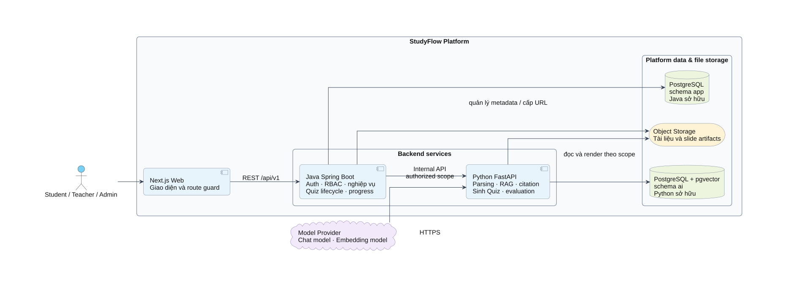
Hình 3.1. Kiến trúc logic và ranh giới giữa các service.Next.js chỉ gọi Java qua /api/v1. Java là system of record, quyết định quyền truy cập, vòng đời Quiz, chấm điểm, tiến độ và kế hoạch. Python nhận authorized scope từ Java để xử lý tài liệu, embedding, retrieval, RAG/Tutor, citation và sinh bản nháp Quiz; không tự truy cập dữ liệu nghiệp vụ của Student.
SVGPNGNguồn / chú giải
Hình 3.2. Sơ đồ Entity tổng quan mức logic của StudyFlow.
Chèn vào Chương 3 tại đoạn dẫn cùng số hình. Hình dưới thể hiện sơ đồ entity tổng quan studyflow. Khổ dọc vì hình ngắn hoặc vừa.
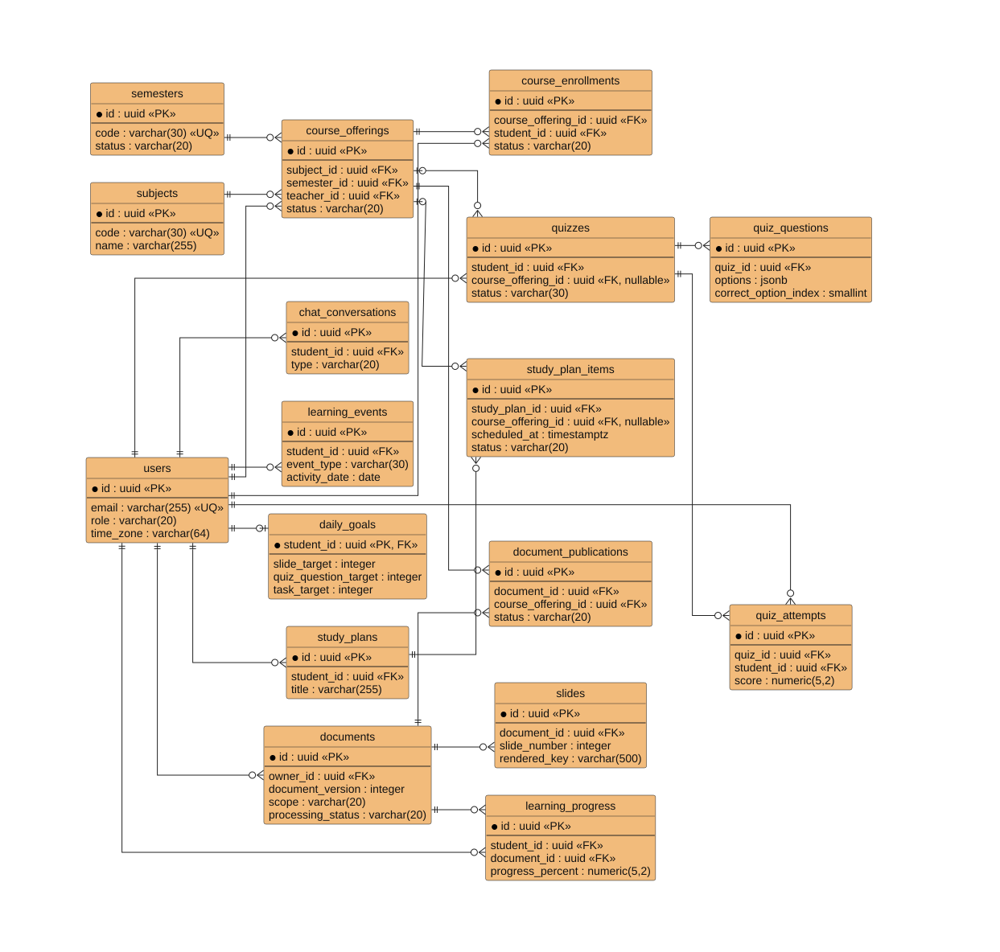
Hình 3.2. Sơ đồ Entity tổng quan mức logic của StudyFlow.Một Course Offering gắn với một Subject, một Semester và một Teacher; Student tham gia qua Course Enrollment. Document là tài nguyên có owner; Document Publication nối học liệu Teacher với lớp, không chuyển quyền sở hữu. Personal PDF không tự trở thành học liệu chung sau khi được dùng cho RAG hoặc Quiz.
SVGPNGNguồn / chú giải
Hình 3.3. ERD tổng quan: 27 bảng schema app và 4 bảng schema ai.
Chèn vào Chương 3 tại đoạn dẫn cùng số hình. Hình dưới thể hiện erd studyflow. Khổ dọc vì hình ngắn hoặc vừa.
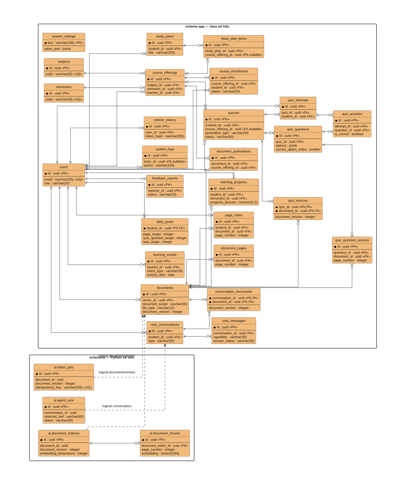
Hình 3.3. ERD tổng quan: 27 bảng schema app và 4 bảng schema ai.Quan hệ chân quạ thể hiện bội số; PK là khóa chính, FK là khóa ngoại và nullable là cho phép NULL. Các định danh document/version/conversation trong schema ai là tham chiếu logic từ contract, không tạo FK xuyên sang schema app. Hình tổng hợp 31 bảng nên được chèn ở trang ngang hoặc phụ lục khổ lớn; khi cần đọc thuộc tính phải dùng SVG gốc, không ép ảnh xuống một trang dọc.
SVGPNGNguồn / chú giải
Hình 3.4. Biểu đồ lớp xử lý Personal Document Assistant và RAG tools.
Chèn vào Chương 3 tại đoạn dẫn cùng số hình. Hình dưới thể hiện lớp personal rag. Khổ ngang vì hình dài.
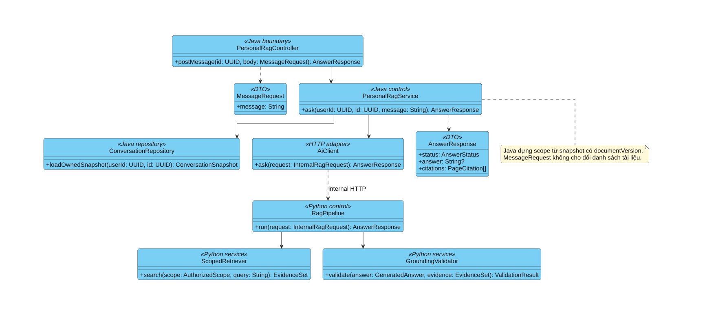
Hình 3.4. Biểu đồ lớp xử lý Personal Document Assistant và RAG tools.Controller nhận message cùng danh sách Personal PDF đã chọn; application service tải conversation snapshot thuộc owner và dựng InternalAssistantRequest. Single Agent chỉ chọn một trong ba tool được allowlist: hỏi đáp, tóm tắt hoặc tạo Quiz. Mỗi tool bắt buộc nhận AuthorizedScope; AssistantResponse trả capability, trạng thái, nội dung/Quiz draft và citation có cấu trúc, không mang raw provider payload.
SVGPNGNguồn / chú giải
Hình 3.5. Biểu đồ lớp xử lý Course Material PDF Tutor.
Chèn vào Chương 3 tại đoạn dẫn cùng số hình. Hình dưới thể hiện lớp course material pdf tutor. Khổ ngang vì hình dài.
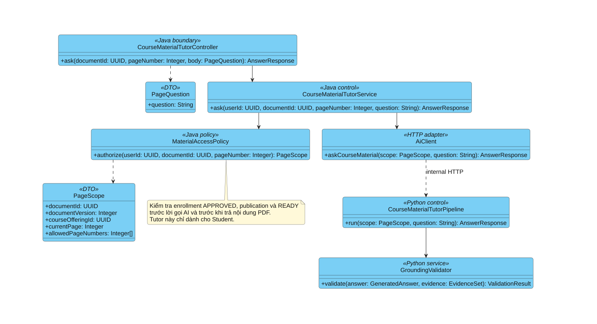
Hình 3.5. Biểu đồ lớp xử lý Course Material PDF Tutor.Java xác định documentVersion và allowedPageNumbers từ quyền hiện tại. Client không được tự mở rộng page scope. Sau lời gọi AI, Java kiểm tra lại quyền nhằm xử lý publication bị thu hồi trong lúc chờ; citation phải trỏ về page trong scope.
SVGPNGNguồn / chú giải
Hình 3.6. Biểu đồ lớp sinh và tiếp nhận bản nháp Quiz.
Chèn vào Chương 3 tại đoạn dẫn cùng số hình. Hình dưới thể hiện lớp sinh quiz. Khổ dọc vì hình ngắn hoặc vừa.
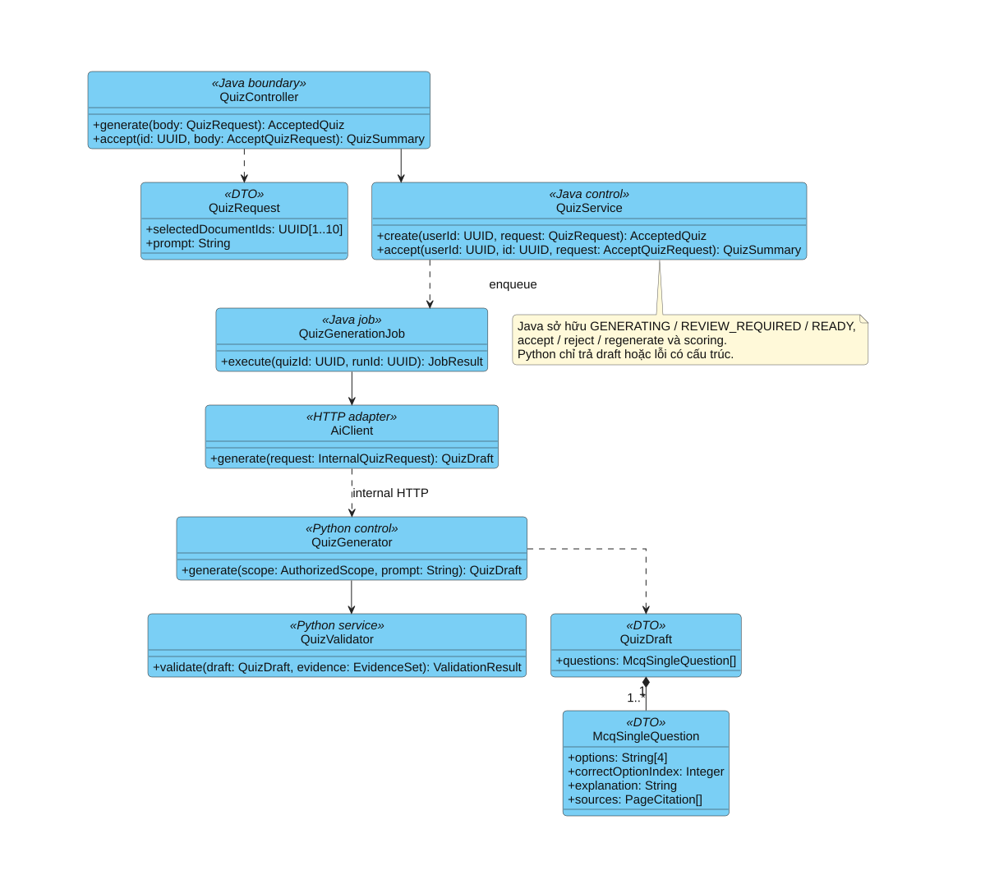
Hình 3.6. Biểu đồ lớp sinh và tiếp nhận bản nháp Quiz.QuizGenerationJob của Java nhận quiz/run identity, gọi Python và xử lý kết quả. Python trả QuizDraft chứa McqSingleQuestion có bốn options, một đáp án và nguồn. Java kiểm tra toàn bộ batch rồi mới lưu REVIEW_REQUIRED. Scoring thuộc Java ở Use Case làm bài; không gộp thành trách nhiệm Python hoặc tự gán cho chức năng chưa được thành viên khác chọn.
SVGPNGNguồn / chú giải
Hình 3.7. Hoạt động Single Agent chọn tool hỏi đáp, tóm tắt hoặc tạo Quiz.
Chèn vào Chương 3 tại đoạn dẫn cùng số hình. Hình dưới thể hiện activity rag. Khổ ngang vì hình dài.
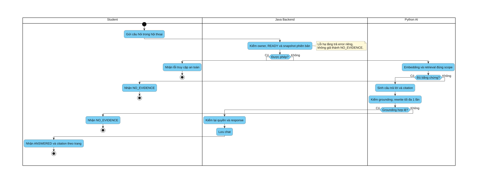
Hình 3.7. Hoạt động Single Agent chọn tool hỏi đáp, tóm tắt hoặc tạo Quiz.Nhánh thiếu bằng chứng kết thúc bằng NO_EVIDENCE trước bước sinh câu trả lời. Nhánh có bằng chứng vẫn phải qua grounding validation; rewrite bị giới hạn một lần và không được đổi nguồn. Quyền không hợp lệ làm luồng dừng trước retrieval. Các swimlane Student, Java Backend và Python AI chỉ rõ thành phần chịu trách nhiệm ở từng bước.
SVGPNGNguồn / chú giải
Hình 3.8. Hoạt động hỏi đáp Course Material PDF theo trang.
Chèn vào Chương 3 tại đoạn dẫn cùng số hình. Hình dưới thể hiện activity tutor. Khổ ngang vì hình dài.
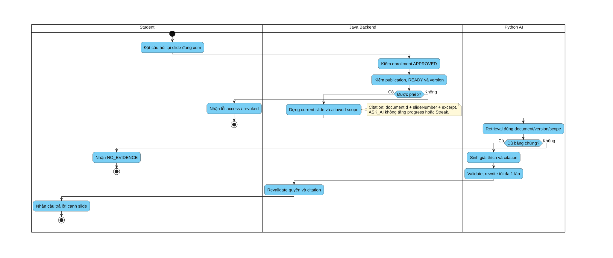
Hình 3.8. Hoạt động hỏi đáp Course Material PDF theo trang.Khác với Personal Assistant kiểm owner, Tutor kiểm enrollment và publication. Page hiện tại định hướng retrieval nhưng không thay thế allowed scope. Kết quả trả Viewer có citation theo trang; ASK_AI không duy trì Streak.
SVGPNGNguồn / chú giải
Hình 3.9. Hoạt động sinh và review Quiz AI.
Chèn vào Chương 3 tại đoạn dẫn cùng số hình. Hình dưới thể hiện activity quiz. Khổ ngang vì hình dài.
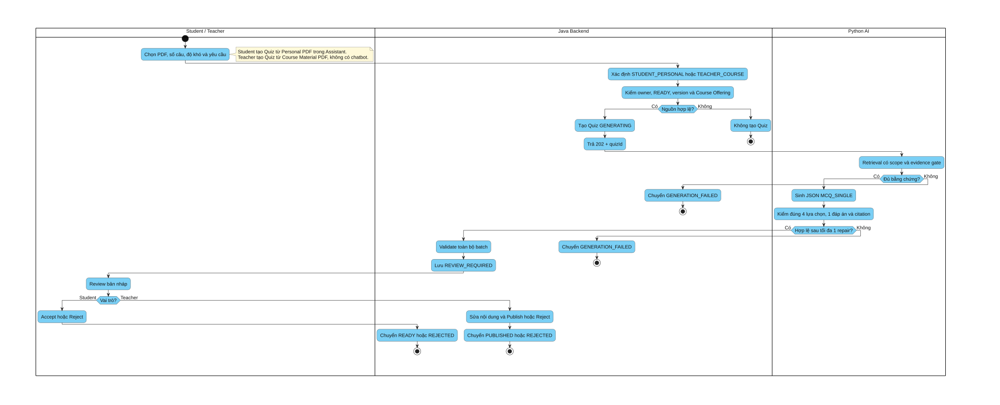
Hình 3.9. Hoạt động sinh và review Quiz AI.Java tạo GENERATING và trả 202 để giao diện không giữ request chờ sinh đề. Python kiểm tra schema và grounding; Java là lớp kiểm tra cuối trước REVIEW_REQUIRED. Student review rồi accept/reject; Teacher có thể sửa rồi publish/reject. Không có đường từ output LLM tới làm bài trực tiếp.
SVGPNGNguồn / chú giải
Hình 3.10. Tương tác tuần tự của Personal Document Assistant.
Chèn vào Chương 3 tại đoạn dẫn cùng số hình. Hình dưới thể hiện sequence rag. Khổ ngang vì hình dài.
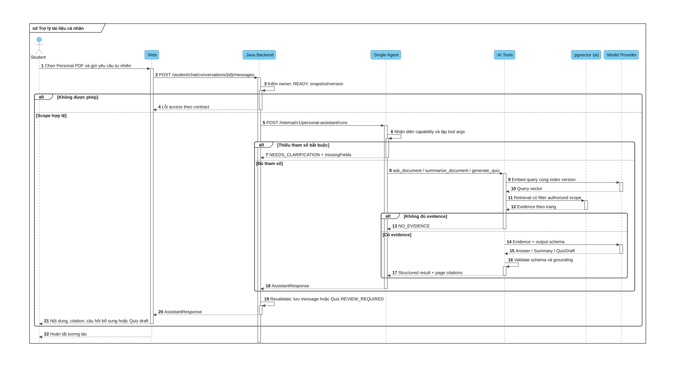
Hình 3.10. Tương tác tuần tự của Personal Document Assistant.Khung alt phân biệt sai quyền, thiếu tool args, thiếu evidence và có evidence. Single Agent chọn tool, nhưng Java vẫn dựng scope và revalidate kết quả. Query embedding xảy ra trước tìm kiếm; khi thiếu bằng chứng, tool không được sinh answer/summary/Quiz không có nguồn.
SVGPNGNguồn / chú giải
Hình 3.11. Tương tác tuần tự của Course Material PDF Tutor.
Chèn vào Chương 3 tại đoạn dẫn cùng số hình. Hình dưới thể hiện sequence tutor. Khổ ngang vì hình dài.
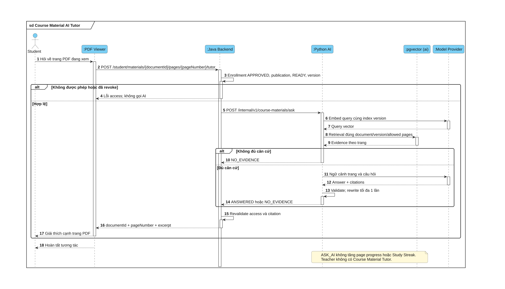
Hình 3.11. Tương tác tuần tự của Course Material PDF Tutor.Public endpoint là POST /api/v1/student/materials/{documentId}/pages/{number}/tutor. Mỗi lần hỏi phải kiểm tra quyền hiện tại; conversation không cho phép bỏ kiểm tra publication. Citation dùng documentId và pageNumber.
SVGPNGNguồn / chú giải
Hình 3.12. Tương tác tạo bản nháp và duyệt Quiz cho Student/Teacher.
Chèn vào Chương 3 tại đoạn dẫn cùng số hình. Hình dưới thể hiện sequence quiz. Khổ dọc vì hình ngắn hoặc vừa.
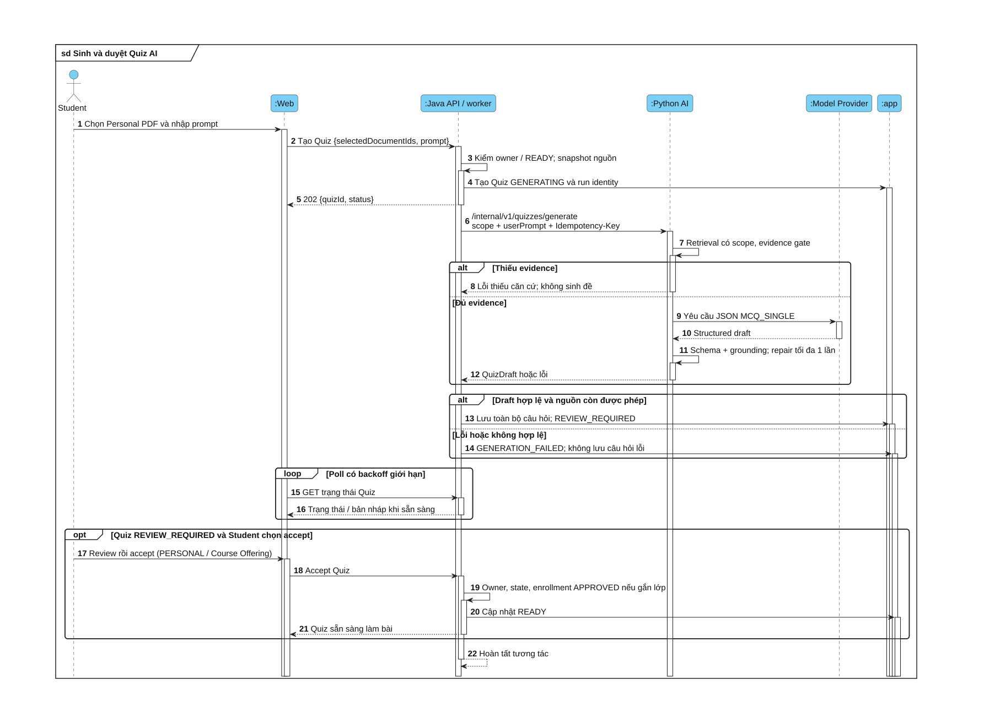
Hình 3.12. Tương tác tạo bản nháp và duyệt Quiz cho Student/Teacher.FE chỉ poll Java. Idempotency/run identity ngăn việc retry hoặc timeout tạo nhiều bộ câu hỏi cho cùng tác vụ. Student accept Quiz cá nhân sang READY; Teacher review/chỉnh sửa rồi publish Quiz lớp sang PUBLISHED. Nguồn Personal PDF không bị chuyển thành học liệu lớp.
SVGPNGNguồn / chú giải
Hình 3.13. Hoạt động tham gia và xét duyệt Course Enrollment.
Chèn vào Chương 3 tại đoạn dẫn cùng số hình. Hình dưới thể hiện activity enrollment. Khổ ngang vì hình dài.
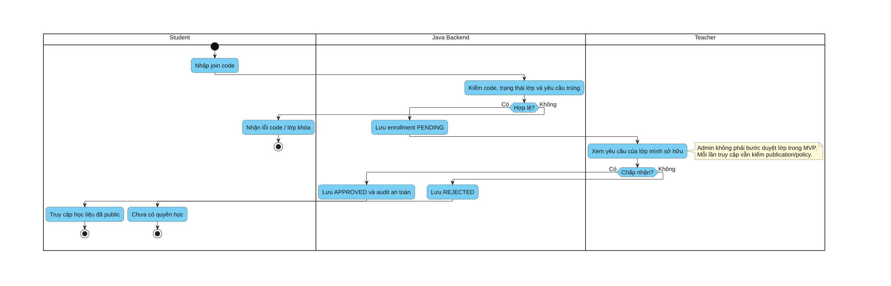
Hình 3.13. Hoạt động tham gia và xét duyệt Course Enrollment.Student không tự đặt APPROVED; Teacher owner quyết định yêu cầu. Sau khi được duyệt, từng lần truy cập học liệu vẫn phải kiểm publication và chính sách lock/archive, không cấp quyền vĩnh viễn chỉ vì từng tham gia lớp.
SVGPNGNguồn / chú giải
Hình 3.14. Tiếp nhận, lập chỉ mục và đồng bộ trạng thái tài liệu.
Chèn vào Chương 3 tại đoạn dẫn cùng số hình. Hình dưới thể hiện sequence index. Khổ dọc vì hình ngắn hoặc vừa.
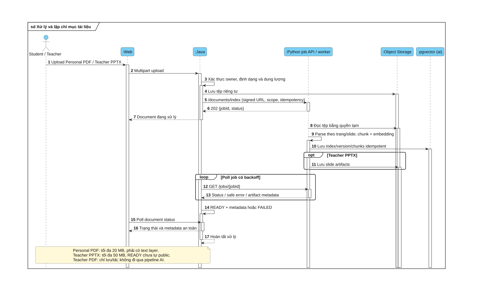
Hình 3.14. Tiếp nhận, lập chỉ mục và đồng bộ trạng thái tài liệu.Python nhận job và trả 202 trước khi worker chạy. Java poll job để lấy trạng thái, sau đó cập nhật document. Chỉ PDF text layer được nhận; document READY vẫn cần Teacher chủ động public. PDF mã hóa hoặc không có text layer chuyển lỗi tương ứng.
SVGPNGNguồn / chú giải
Hình 3.15. Trạng thái Quiz và điều kiện chuyển trạng thái.
Chèn vào Chương 3 tại đoạn dẫn cùng số hình. Hình dưới thể hiện state quiz. Khổ ngang vì hình dài.
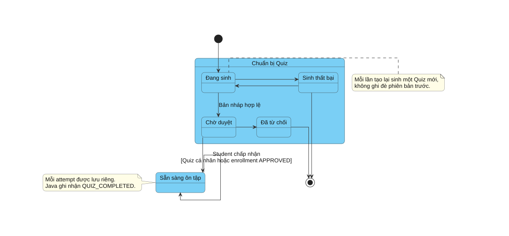
Hình 3.15. Trạng thái Quiz và điều kiện chuyển trạng thái.GENERATING chỉ chuyển REVIEW_REQUIRED khi toàn bộ draft hợp lệ. Student accept để chuyển READY; Teacher publish để chuyển PUBLISHED. Thao tác làm bài không đưa Quiz về GENERATING mà tạo attempt mới. Regenerate tạo một Quiz khác và giữ lịch sử. Java chấm Quiz và ghi event một lần, không dùng model AI để chấm.
SVGPNGNguồn / chú giải
Hình 3.16. Hoạt động quản lý task và lịch tuần.
Chèn vào Chương 3 tại đoạn dẫn cùng số hình. Hình dưới thể hiện activity kế hoạch và lịch. Khổ ngang vì hình dài.
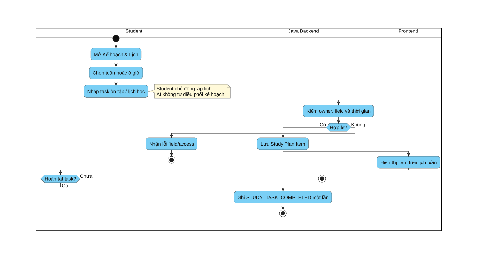
Hình 3.16. Hoạt động quản lý task và lịch tuần.Java kiểm owner và dữ liệu trước khi lưu plan item. Lịch tuần phản ánh các item, không tự tạo thêm learning event. Chỉ thao tác hoàn tất task hợp lệ mới ghi STUDY_TASK_COMPLETED và phải chống ghi trùng; AI không tự điều phối lịch.
SVGPNGNguồn / chú giải
Hình 3.17. Tổng hợp sự kiện học tập cho Dashboard.
Chèn vào Chương 3 tại đoạn dẫn cùng số hình. Hình dưới thể hiện activity dashboard. Khổ ngang vì hình dài.
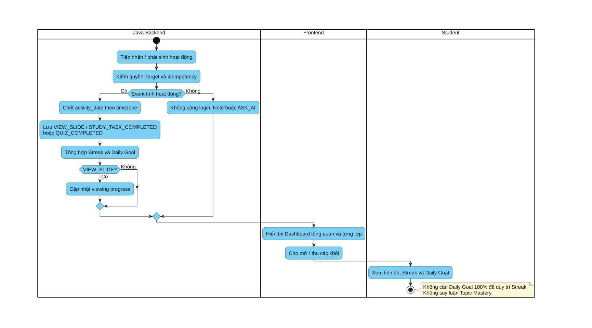
Hình 3.17. Tổng hợp sự kiện học tập cho Dashboard.Java chốt ngày theo timezone và khử trùng event trước khi tổng hợp. Chỉ ba loại sự kiện học hợp lệ duy trì Streak; Note, đăng nhập và ASK_AI không được tính. Dashboard chứa toàn bộ tiến độ chung/từng lớp và hỗ trợ mở/thu các khối; không có trang tiến độ riêng.
SVGPNGNguồn / chú giải